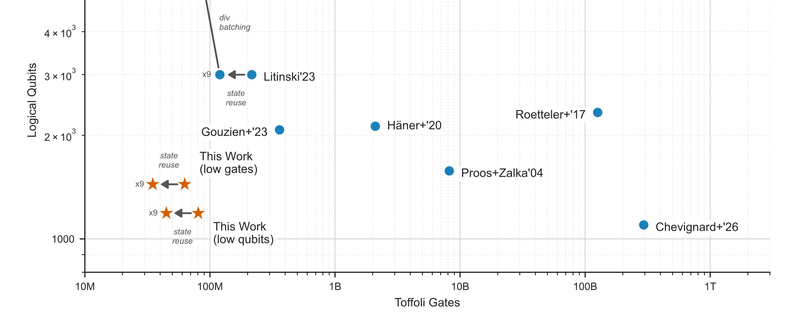

Why Privacy Chains Must Migrate First

Google recently urged every blockchain to upgrade to post-quantum cryptography. Most of the conversation since has been around Bitcoin. We're here to argue the conversation should be focused on privacy.
The paper, Securing Elliptic Curve Cryptocurrencies against Quantum Vulnerabilities, demonstrates that the quantum resources required to break elliptic curve cryptography are 20x lower than previously estimated. But Bitcoin's quantum risk to digital signatures is a problem that can be solved with an upgrade. Here we argue the paper's most consequential finding applies to a category where the damage cannot be undone: privacy chains.
Most of the coverage has focused on what this means for Bitcoin. Google identifies approximately 6.9 million BTC as quantum-vulnerable across all script types, and shows that fast-clock quantum architectures could enable attacks on transactions in the mempool before they are confirmed. These are very serious findings.
But the paper's most consequential finding isn't about Bitcoin. It's about privacy chains.
Privacy Is the Most Pressing Danger
Google's paper dedicates a section to privacy-preserving blockchains and states it plainly: "the most pressing quantum danger" for Zcash is the retroactive degradation of privacy.
Every shielded transaction on Zcash is encrypted using keys derived from elliptic curve Diffie-Hellman key exchange. The encryption itself uses a quantum-resistant symmetric scheme, but the key derivation does not. The ephemeral public key used in the exchange is recorded directly on the blockchain, alongside the encrypted note. A quantum computer that can solve the elliptic curve discrete logarithm problem recovers the encryption key from that ephemeral public key, decrypting the note and revealing the transaction amount, the memo, and the recipient's address. This works retroactively, on every shielded transaction ever recorded.
This is the harvest-now, decrypt-later threat in its purest form. The encrypted data is already sitting on a public, immutable ledger. It cannot be rotated, patched, or recalled. Nation-state adversaries archiving blockchain data today will be able to deanonymize the entire history of shielded transactions the moment a sufficiently powerful quantum computer comes online.
This distinction matters. Digital signatures, the primary quantum vulnerability for Bitcoin and Ethereum, can be migrated. If those networks upgrade to post-quantum signature schemes, old transactions are not retroactively compromised. Encrypted data on a public ledger is different. Once decrypted, the damage is permanent. There is no migration path for data that has already been exposed.
This is the same conclusion a16z's Justin Thaler reached when he called privacy chains "the exception," the one category of blockchain that cannot afford to wait. Google's paper is now independent, authoritative validation of that position.
Beyond Privacy: The Full Attack Surface
The retroactive decryption of shielded transactions is the most pressing danger, but it is not the only one. Google's analysis confirms that a cryptographically relevant quantum computer breaks Zcash's Orchard protocol across multiple independent attack vectors, all rooted in the same elliptic curve math on the Pallas/Vesta curve cycle.
Google confirms that CRQCs will compromise the soundness of zkSNARK protocols. Orchard's Halo 2 proof system relies on an Inner Product Argument whose security depends on discrete log hardness over the Vesta curve. Shor's algorithm solves this. With proof soundness broken, an attacker can construct valid-looking proofs for false statements, including proofs that claim ownership of funds that don't exist. The result is the ability to mint counterfeit tokens from nothing, inside a shielded pool where real-time supply auditing is impossible.
The spend authorization and binding signatures that protect individual transactions are similarly vulnerable. Both use RedPallas, a Schnorr-like signature scheme on the Pallas curve, directly broken by Shor's algorithm. An attacker who can forge spend authorization can steal existing shielded funds. An attacker who can forge the binding signature bypasses the mechanism that ensures value flowing out of the shielded pool matches value flowing in.
Google also identifies a subtler attack on unlinkability. Zcash allows users to generate unlimited diversified addresses from a single viewing key, so that no one can tell whether two addresses belong to the same person. A quantum computer derives the incoming viewing key from any diversified address, linking all of a user's addresses together and destroying pseudonymity. Google notes that Zcash's key hierarchy limits the blast radius here: the viewing key is recovered, but not the spending key, so this attack deanonymizes without directly enabling theft.
Zcash does have a partial defense against the inflation attacks. The Turnstile mechanism tracks total supply within each shielded pool by requiring assets to pass through a transparent pool when moving between pools. Google describes this as "the last line of defense against supply inflating attacks." It provides delayed detection, but not prevention. An attacker can mint counterfeit tokens and operate undetected until the discrepancy surfaces when someone attempts to unshield more ZEC than the Turnstile recorded entering the pool.
In total, Google identifies five independent quantum attack vectors on Orchard: retroactive decryption, unlinkability broken, proof forgery, spend authorization forgery, and binding signature forgery. Every one of them traces back to the same elliptic curve cryptography that Google just demonstrated requires far fewer quantum resources to break than previously understood.
Why Privacy Chains Cannot Wait
The standard response to quantum risk is that there is time to upgrade. For most blockchains, that is defensible. Signature schemes can be swapped, and historical transactions remain secure.
Privacy protocols do not have that option.
The encrypted data is already exposed. Shielded transactions recorded today with elliptic curve-derived encryption sit on a public, immutable ledger. A post-quantum upgrade to the encryption scheme protects future transactions but does nothing for the years of historical data already on-chain. That data is a permanent target for retroactive deanonymization.
Forgery damage compounds silently as well. If counterfeit tokens are minted into a shielded pool before the proof system is upgraded, that counterfeit value is embedded in the commitment tree. A post-quantum proof system stops future forgeries but cannot detect or remove tokens already created.
Building for the Post-Quantum Era
This is why we built QCash, a quantum-safe private payments protocol on Solana, built from the ground up with post-quantum cryptographic primitives.
QCash uses STARK proofs instead of SNARKs. STARKs are hash-based, require no trusted setup, and carry no elliptic curve assumptions. The proof forgery attack that Google identifies against Halo 2 does not apply. Accounts are encrypted with Kyber-768, a NIST-standardized lattice-based encryption scheme. The retroactive decryption attack that Google calls the most pressing danger to Zcash does not apply. Transactions prove ownership through zero-knowledge proofs of decryption rather than digital signatures, eliminating the spend authorization and binding signature attack vectors entirely.
None of the five attack vectors Google identified against Zcash's Orchard protocol apply to QCash. Not one.
QCash deploys as a standard Solana program with no protocol fork required. It is designed to deliver private payments where the privacy does not come with an expiration date, where transactions made today remain confidential against the quantum-equipped adversaries of tomorrow.
Google's paper is a wake-up call for the entire privacy sector. We have been building toward this moment. The question is no longer whether privacy chains need to migrate to post-quantum cryptography. It is whether they are even able to do so given the attack vectors quantum computers pose.
It may be the case that the safest and most secure privacy chains are quantum-safe from day one.